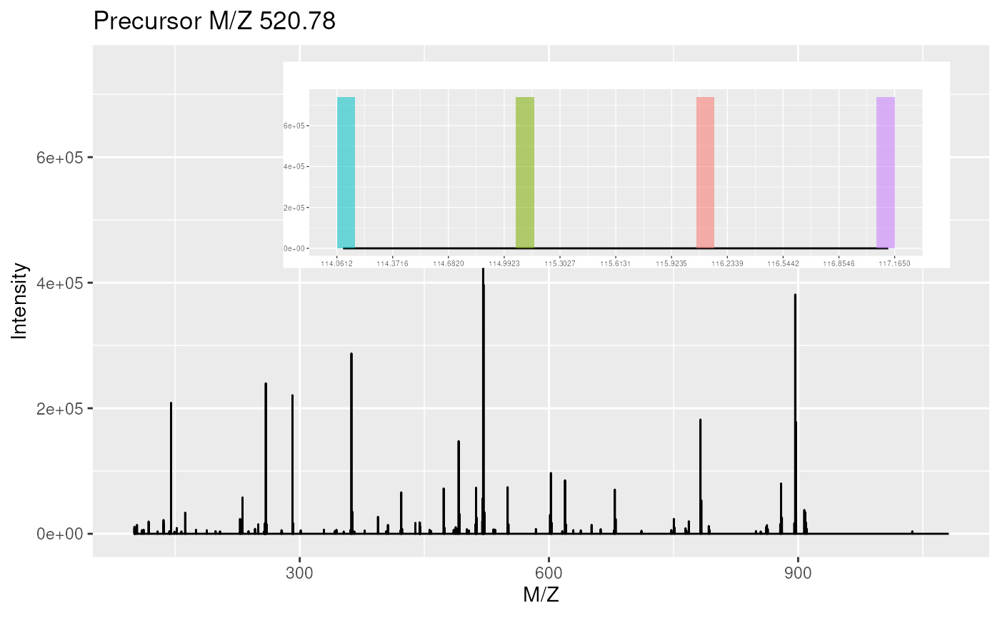

Removes reporter ion tag peaks
removeReporters-methods.RdThis methods sets all the reporter tag ion peaks from one MS2
spectrum or all the MS2 spectra of an experiment to 0. Reporter data
is specified using an "ReporterIons"
instance. The peaks are selected around the expected reporter ion
m/z value +/- the reporter width.
Optionally, the spectrum/spectra can be cleaned to
remove successive 0 intensity data points (see the clean
function for details).
Note that this method only works for MS2 spectra or experiments that contain MS2 spectra. It will fail for MS1 spectrum.
Methods
signature(object = "MSnExp", reporters = "ReporterIons", clean = "logical", verbose = "logical" )The reporter ion peaks defined in the
reportersinstance of all the MS2 spectra of the"MSnExp"instance are set to 0 and, ifcleanis set toTRUE, cleaned. The default value ofreportersisNULL, which leaves the spectra as unchanged. Theverboseparameter (default isTRUE) defines whether a progress bar should be showed.signature(object = "Spectrum", reporters = "ReporterIons", clean = "FALSE")The reporter ion peaks defined in the
reportersinstance of MS2"Spectrum"instance are set to 0 and, ifcleanis set toTRUE, cleaned. The default value ofreportersisNULL, which leaves the spectrum as unchanged.
See also
clean and removePeaks for other spectra
processing methods.
Examples
sp1 <- itraqdata[[1]]
sp2 <- removeReporters(sp1,reporters=iTRAQ4)
sel <- mz(sp1) > 114 & mz(sp1) < 114.2
mz(sp1)[sel]
#> [1] 114.0956 114.0975 114.0993 114.1012 114.1030 114.1049 114.1067 114.1085
#> [9] 114.1104 114.1122 114.1141 114.1159 114.1178 114.1196 114.1214 114.1233
#> [17] 114.1251
intensity(sp1)[sel]
#> [1] 0.0000 0.0000 0.0000 0.0000 1640.2427 25143.0898
#> [7] 87905.3906 164363.5156 197455.8125 158061.2812 79058.3672 17596.0898
#> [13] 346.5309 0.0000 0.0000 0.0000 0.0000
plot(sp1,full=TRUE,reporters=iTRAQ4)
intensity(sp2)[sel]
#> [1] 0 0 0 0 0 0 0 0 0 0 0 0 0 0 0 0 0
plot(sp2,full=TRUE,reporters=iTRAQ4)
